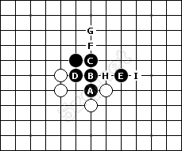
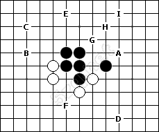
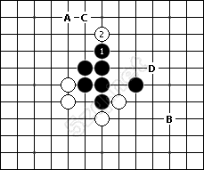
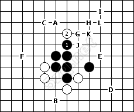
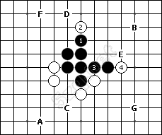
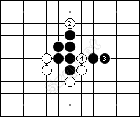
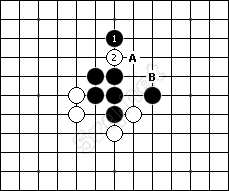
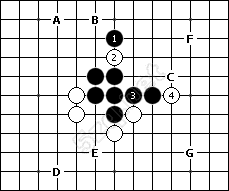
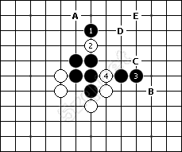

【茶馆专题】找做V点的思路
#1 【茶馆专题】找做V点的思路 作者：蓝天蓝 发表时间：2011-2-15 16:03:38
【茶馆专题】找做V点的思路 转自五子茶馆
VCF是五子棋获胜的一种方法，就是通过连续冲四获得胜利。
在你做了一手棋之后，因为这手棋的存在，下一手可以通过VCF获胜，我们把这手棋称为做V。跟做四三杀一样，做V也是间接攻击，直接攻 击的点，属于活三和冲四的点要去掉。
我们知道，可以用来连续冲四的棋型有三种：1、特型三；2、眠三的联合；3、眠三冲四后形成新的眠三。
面对一个可以做V的局面，找做V点的思路可以这样，以有两个眠三的例子来说明：
1、先找到这两个眠三，并找到冲四点。
2、不利用眠三，看否是有做V点，需利用特型三。
3、利用第一个眠三的第一个冲四点，不利用第二个眠三，找跟这个冲四点关联的做四三杀点和做V点。其中，做四三杀点可以用3+1或2+2，做V利用特型三。
4、利用第二个眠三的第一个冲四点，找跟这个冲四点关联的做四三杀点和做V点。
5、利用第二个眠三的第二个冲四点，找跟这个冲四点关联的做四三杀点和做V点。
6、利用第一个眠三的第二个冲四点，不利用第二个眠三，找跟这个冲四点关联的做四三杀点和做V点。
7、利用第二个眠三的第一个冲四点，找跟这个冲四点关联的做四三杀点和做V点。
8、利用第二个眠三的第二个冲四点，找跟这个冲四点关联的做四三杀点和做V点。
这里要注意的是，里面涉及的做V点，全部是利用特型三来做V。
下面来做一个小题目，看如何来运用这个思路。
问：黑先有多少个做V点？

第一步：先找到眠三和冲四点。
可以找到两个眠三：
第一个眠三是ABC，冲四点是G和F；
第二个眠三是DBE，冲四点是H和I。

第二步：不利用眠三，看否是有做V点，需利用特型三。
这里不利用眠三，是指你做了一手形成V，这个V并没用那两个眠三的冲四。这就需要利用特型三。
先找到图中所有的特型三点，有A～F，共6个特型三点。
其中A和D可以形成V，这两个点就是做V点，是两步V。

第三步：利用第一个眠三的第一个冲四点，不利用第二个眠三，找做四三杀点和做V点。
先找做四三杀点，如图，是2+2，找到A～D，四个做四三杀点，这是2步V。
注意的是，这些做四三杀点一定要跟黑1关联。

继续找跟黑1关联的特型三做V点。
先找特型三点，有6个，其中B点可以形成V。A点在成V之前可以四三杀，所以归在做四三杀里面，不算是做V点。
这样就找完了利用第一个眠三，第一个冲四点，而不利用其它眠三，所有的做V点。

第四步：利用第一个眠三的第一个冲四点，同时利用第二个眠三的第一个冲四点，找跟黑3关联的做四三杀点和做V点。
可以找到找到A～F，六个做四三杀点，这是2步V。
还可以找到G点一个做V点。

第五步：利用第一个眠三的第一个冲四点，同时利用第二个眠三的第二个冲四点，找跟黑3关联的做四三杀点和做V点。
找不到跟黑3关联的做四三杀点和做V点。

第六步：利用第一个眠三的第二个冲四点，不利用第二个眠三，找跟黑1关联的做四三杀点和做V点。
只有A点跟黑1关联的做四三杀点，B点因为本身是活三点，属于直接攻击，所以不算做四三杀点。
做V点没有。

第七步：利用第一个眠三的第二个冲四点，同时利用第二个眠三的第一个冲四点，找跟黑3关联的做四三杀点和做V点。
因为没有关联到1，实际上这个图我们已经找过了，有A～F六个做四三杀点，和G一个做V点
